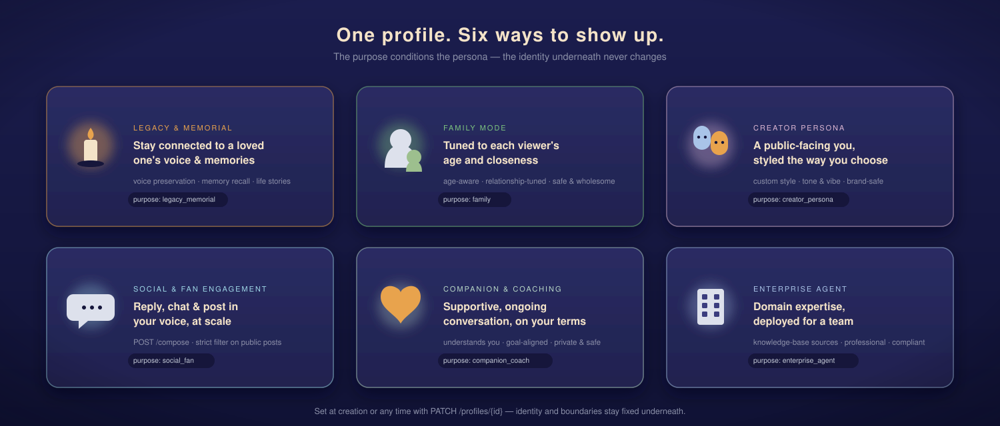
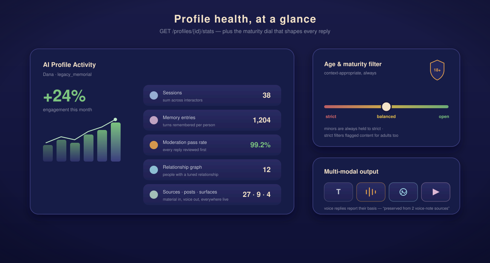
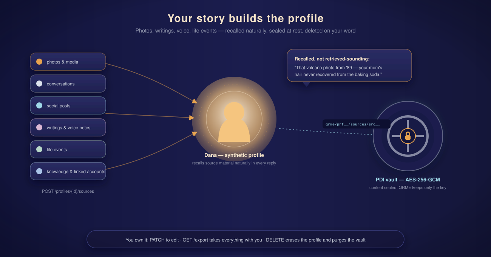

The whole idea in one frame: a profile dissolving into data, relationship threads graded warm-dense (family) to cool-sparse (stranger), a memory timeline beneath. 1280×640 — GitHub's social-preview ratio.
open SVG →Two silhouettes — the person and their synthetic profile — overlapping and dissolving into a neural constellation. Reads at 512 px down to 64 px.
open SVG →{kind=link}

People with their luminous avatars above, linked to each other by relationship threads. 16:9 for landing pages and decks.
open SVG →
Identity → relationships → memory & privacy → go live, as four phone screens on a progress rail. Mirrors the real POST /profiles flow.

One profile, three voices: warm and full-memory for family, casual for a friend, guarded for a stranger — the core differentiator.
open SVG →
A framed portrait dissolves into a living voice for the family — the legacy & memorial purpose, with owner-set boundaries.
open SVG →
Signals in → adapt → responses out → observe, around the EMA gauge (α = 0.3, per relationship). Style adapts; identity never does.
open SVG →
A timeline of kept, restricted, and cleared memories with the view / clear / restrict control bar — the owner decides.
open SVG →
Every reply passes policy, safety, and owner-rule gates before anyone sees it — approved, held for owner review, or rejected, with flag reasons logged.
open SVG →
The profile grows with its people along a seasonal arc — real-time or fixed-age, owner-configured.
open SVG →
One identity radiating to chat, feed, web, and AR/VR — same memory, same rules, same moderation everywhere.
open SVG →
A verification gate between the standard space and a clearly distinct, opt-in adult space — verified at both ends, never the default.
open SVG →
Five people QRME is built for — the legacy keeper, the busy connector, the creator, the caregiver, the explorer.
open SVG →
Wearable signals → JIM-mini detects → the matching QRME specialist answers → emergency-contact escalation when critical. The cross-product story.
open SVG →
One profile, six ways to show up — each card names its API value; identity and boundaries stay fixed underneath.
open SVG →{kind=link}

The GET /stats dashboard — engagement trend, sessions, memory entries, moderation pass rate — beside the strict/balanced/open maturity dial and multi-modal output.
{kind=link}

Your story builds the profile: seven source types flow in, recall comes out naturally, and content is sealed in PDI's AES-256-GCM vault — QRME keeps only the key.
open SVG →{kind=link}